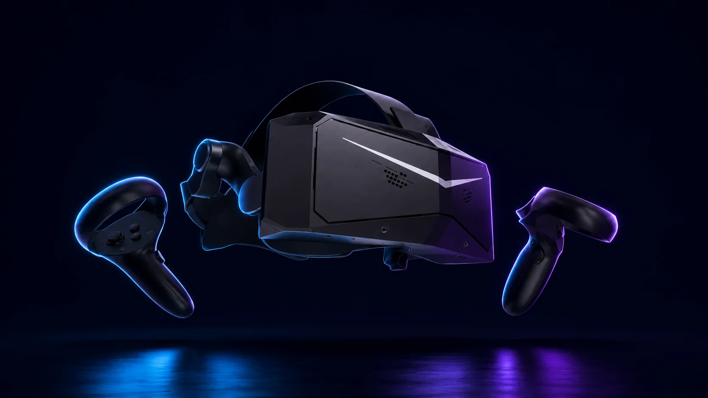

Is the Pimax Crystal Light worth it?

First, the honest framing: the Pimax Crystal Light is not a first VR headset, and this isn't a guide that pretends otherwise. It's a tethered, PC-only headset aimed at one kind of person — the sim racer or flight simmer who has gone down the PCVR rabbit hole and now cares more about image clarity than about anything else. If that's not you, a Quest 3 will make you happier for less money and less hassle. If it is you, the Crystal Light is one of the most interesting headsets on the market. Here's why.
What you're buying is resolution. The Crystal Light runs 2880×2880 pixels per eye through glass aspheric lenses — roughly 35 pixels per degree, well past the point where you can pick out individual pixels. In practice that means cockpit gauges, brake markers, and distant aircraft look closer to a sharp 2D monitor than to the slightly fuzzy "VR with training wheels" look of cheaper headsets. For reading instruments at a glance in iRacing or a flight sim, that clarity isn't a gimmick — it translates into more confidence and, genuinely, better laps. The QLED panels with local-dimming backlights give you bright, vivid color and decent contrast, though not the true blacks of an OLED.
The headline is the price. At around $858 with controllers — and it dips below $800 in Pimax's frequent promos — the Crystal Light sits in a niche almost by itself. The only headsets that match or beat its clarity — the Pimax Crystal Super, Varjo's XR-4, the Apple Vision Pro — all cost well north of $1,500. Below it, you're back to standalone headsets like the Quest that cost much less but can't touch the sharpness. For maximum fidelity per dollar in PCVR, nothing really competes.
Now the catch, because there always is one with Pimax. This is a big, fairly heavy headset — comfort takes some tuning, and long sessions ask more of your neck than a Quest does. It's PC-only and tethered: no wireless, no standalone mode, no mixed reality. It leans hard on your graphics card — plan on a strong GPU, with an RTX 3070 as a sensible floor and more being better for that resolution, which is exactly the kind of rig our PCVR guide walks through. And then there's PimaxPlay, the software. It's historically been the rough part of the experience — it still does odd things, like requiring an account just to reach settings — but the consensus from people living with it in 2026 is that it's become reliable and predictable in daily use. You tune it once, and then it mostly stays out of your way.
So, is it worth it? If you're a sim racer or flight simmer with a capable PC who values clarity above wireless freedom and is willing to tinker a little, yes — emphatically. The Crystal Light gives you a view that costs twice as much almost anywhere else, and reviewers who've used it for months keep reaching for it. If you want plug-and-play, wireless, mixed reality, or a broad game library — or you don't have the GPU to feed it — it's the wrong headset, and a Quest 3 is the smarter buy. The Crystal Light isn't trying to be for everyone. It's trying to be the sharpest window into a cockpit you can get without spending four figures, and at that, it succeeds.
And if you're earlier in the journey than this headset assumes, our quiz will point you somewhere saner to start.
Where to buy
View the Pimax Crystal Light →
Answer 7 quick questions and get a personalized match in 60 seconds.
Take the VR Finder quiz →Some links on vr.ar are affiliate links: if you buy through them we may earn a commission at no extra cost to you, which helps keep vr.ar free. Links to Amazon are plain searches and earn us nothing. Prices and specifications are subject to change. See our Privacy Policy.